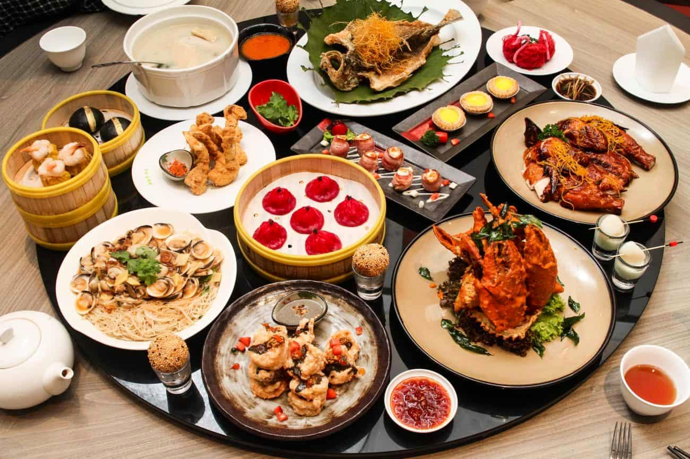
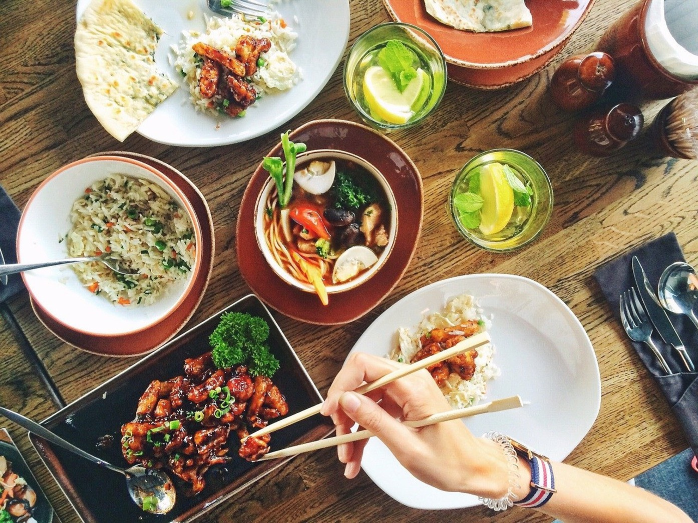
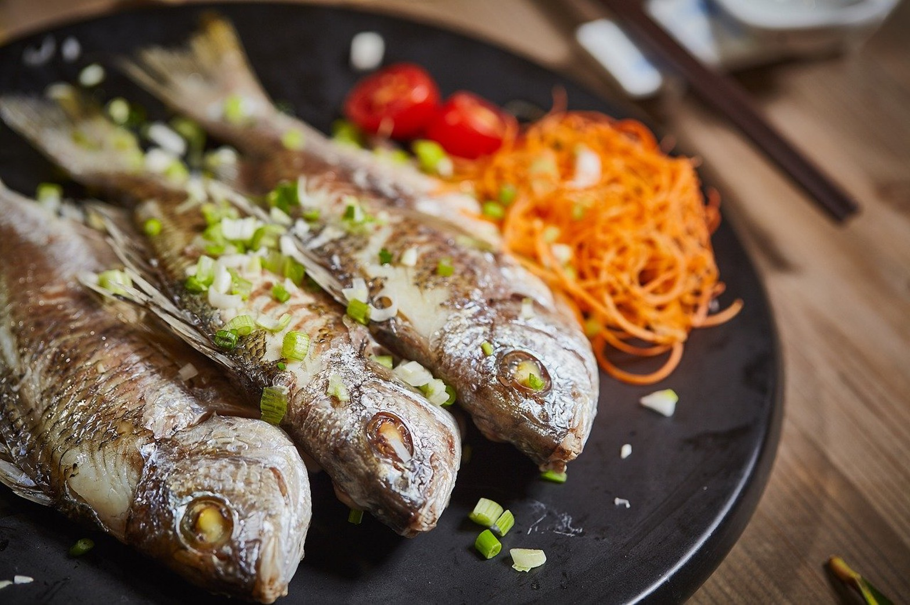
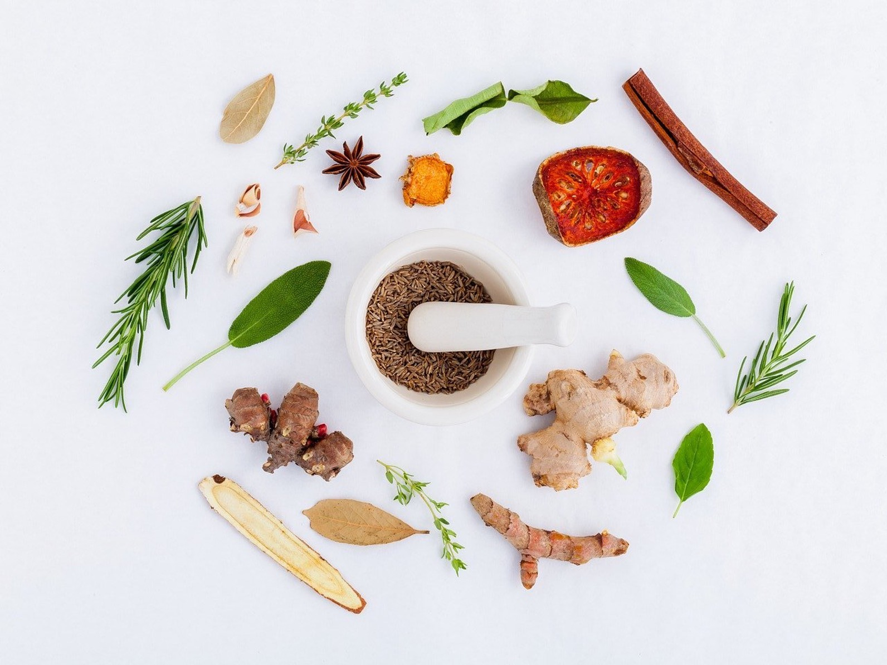

Info:
Traditional Chinese food has to always be fresh. Most dishes are filled with huge quantities of vegetables, grass-fed meats, seafood and herbs and spices. Every ingredient is handpicked for medicinal purposes. The Chinese people rarely eat canned food.

Facts about Chinese Food:
- A Diverse Range of Vegetables are Enjoyed in Chinese Cuisine.

- Nothing Goes to Waste in Chinese Recipes.

- Chinese Food is One of the Healthiest Cuisines in the World.
- Chinese Food Incorporates a Diverse Range of Flavours.

- Traditional Chinese Cuisine is Almost Dairy-Free.